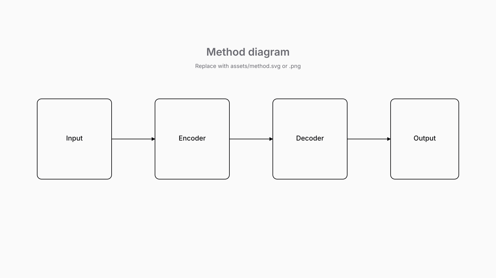
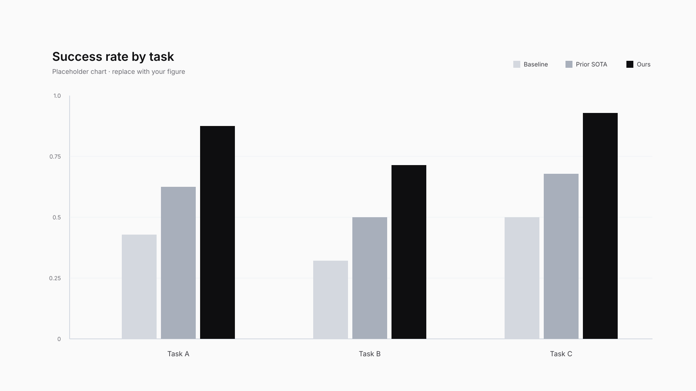

Research · Paper
FLEXI-π: Multi-Stream World-Action Models with Compute–Precision Flexibility
Your Institution
†Project Leads *Core Contributors
State-of-the-art World Action Models (WAMs) achieve strong performance by jointly predicting future frames and actions, but their reliance on full-frame denoising makes them several times slower than parameter-matched Vision-Language-Action models (VLAs)—forcing practitioners to choose between speed and precision at training time.
We introduce FLEXI-π, a single multi-stream policy that flexibly trades off compute and performance at inference. FLEXI-π ingests RGB video, DINO features, and 3D pointmaps through a frozen, pretrained video VAE and DINO encoder, inheriting strong spatiotemporal and semantic priors while drastically reducing data requirements. A Mixture-of-Transformers backbone enables cross-stream interaction during denoising, and per-sample Bernoulli dropout over both input presence and output generation during training makes any combination of streams available at deployment.
A single FLEXI-π checkpoint traces the entire speed–precision Pareto frontier: matching the strongest VLA when generating actions alone, and surpassing the strongest WAM under full joint generation. This yields state-of-the-art results on RoboTwin and LIBERO, and over TODOx improvement on real-world dexterous tasks with a bimanual YAM robot. Crucially, flexibility along the speed–precision axis is built directly into the policy, rather than chosen once and baked in for the model's lifetime.
Method
Explain the approach in one or two paragraphs. The diagram below should do most of the heavy lifting — the prose just gives the reader a way to enter it.

You can also describe the training setup, data, or any implementation details a careful reader would want. Keep deeper math for the paper itself; this page is for intuition.
One trained model serves many deploy regimes.
Per-sample dropout of stream presence and joint flags at training lets the same checkpoint take any input combination and produce any output combination at deploy — no retraining.
INPUT REGIME
stream presence at inference
Full input
Drop pointmap input
Drop video input
DINO-only input
WAM · UNIFIED FLEX
single
checkpoint
Trained with per-sample Bernoulli dropout on stream presence & joint flags — same network, picks regime per call.
no retraining · no re-instantiation
OUTPUT REGIME
stream generation at inference
Full joint generation
Cross-modal pointmap
DINO + 3D + action
Action only
* requires cross_modal_predict=True at train)
Experiments
For each task we evaluate 4 subtasks, comparing three baselines against FLEXI-π on the same prompt.
Quantitative results
Replace this figure with your headline plot — success rates, speed, sample efficiency, whatever your one-glance number is.

| Method | Task A | Task B | Task C | Avg. |
|---|---|---|---|---|
| Baseline | 0.42 | 0.31 | 0.55 | 0.43 |
| Prior SOTA | 0.61 | 0.48 | 0.70 | 0.60 |
| Ours | 0.84 | 0.72 | 0.89 | 0.82 |
What FLEXI-π unlocks
We show FLEXI-π's capability across six settings—five testing generalization, and one demonstrating real-time deployment:
-
1
Setting One
Short description of the first setting. Replace with the actual benchmark, dataset, or scenario being evaluated and what makes it interesting.
-
2
Setting Two
Short description of the second setting. Mention the embodiment, the task split, and the evaluation protocol.
-
3
Setting Three
Short description of the third setting—what is being fine-tuned, the data scale, and the key takeaway.
-
4
Setting Four
Short description of the fourth setting. Use this slot for an adaptation or transfer experiment.
-
5
Setting Five
Short description of the fifth setting—e.g. zero-shot prompting or in-the-wild evaluation.
-
6
Real-Time Inference
Headline deployment number, e.g. TODO× speedup enabling closed-loop control at TODO Hz.
What's next
One or two paragraphs on limitations and future directions. This is the right place to be honest about what the method can't do yet — readers trust pages that name their failure modes.
Close with a forward-looking sentence and an invitation to get in touch.
Citation
@article{yourkey2026paper,
title = {Your Paper Title Goes Here},
author = {Author One and Author Two and Author Three and Senior Author},
journal = {Conference / Journal Name},
year = {2026},
url = {https://your-paper-url}
}